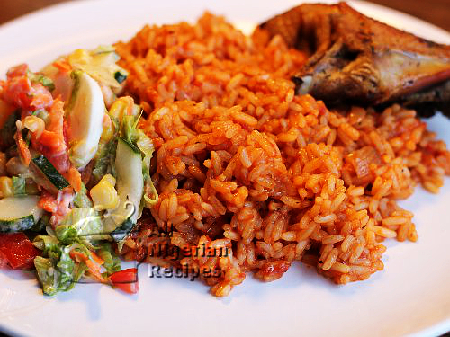

Jollof Rice
Jollof Rice is a popular West African dish made with rice cooked in a rich, spiced tomato sauce. It is flavourful, aromatic, and perfect for any occasion.
Recipe Details
Prep Time: 15 minutes
Cook Time: 45 minutes
Servings: 4
Difficulty: Medium
Photo

Ingredients
- 2 cups of long grain parboiled rice
- 4 medium tomatoes, blended
- 2 red bell peppers, blended
- 1 onion, chopped
- 3 tablespoons of vegetable oil
- 1 teaspoon of curry powder
- 1 teaspoon of thyme
- 2 seasoning cubes
- Salt to taste
- 2 cups of chicken stock
Instructions
- Blend the tomatoes, red bell peppers, and half of the onion together into a smooth paste. Set aside.
- Heat the vegetable oil in a pot over medium heat. Add the remaining chopped onion and fry until soft and translucent.
- Pour in the blended tomato mixture and stir well. Allow it to fry for 15 to 20 minutes, stirring occasionally, until the raw smell is gone and the paste darkens.
- Add the chicken stock, curry powder, thyme, seasoning cubes, and salt. Stir everything together and bring to a boil.
- Wash the rice thoroughly, then add it to the pot. Stir, cover with a tight lid, and cook on low heat for 25 to 30 minutes until the rice is fully cooked and has absorbed the sauce.
- Check and stir every 10 minutes to prevent burning. Add a little water if needed.
Tips & Notes
- Using chicken stock instead of plain water gives the rice a much richer flavour.
- Do not lift the lid too often — the steam is what cooks the rice evenly.
- For party-style Jollof Rice, let the bottom of the pot slightly burn at the end. This smoky base is considered the best part!
Nutrition Facts (Per Serving)
Calories: 410 kcal
Carbohydrates: 68g
Protein: 8g
Fat: 11g
Fibre: 3g
Recipe Source
This recipe was adapted from All Nigerian Recipes - Jollof Rice